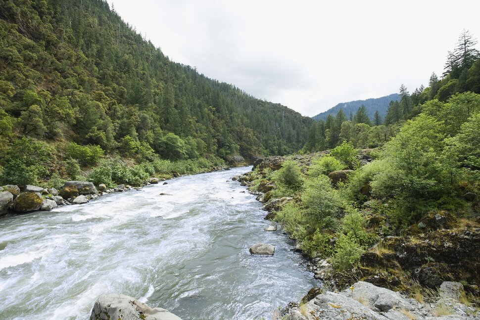

Rivers
Rogue River's Wild
The Rogue River's Wild and Scenic lower section runs from 7 miles west of Grants Pass at Grave Creek to about 11 miles east of Gold Beach, not far from where the Rogue spills out into the Pacific Ocean. Dotted with Class I, II, III and IV rapids, the Rogue makes for an excellent entry-level multiday river-rafting adventure for families seeking a guided tour.
Washington's White Salmon River

Get an adrenaline rush on Washington's White Salmon River.Located in the Columbia River Gorge in Washington, the White Salmon River can run fast, depending on the time of year. Operations such as Wet Planet Whitewater can take you and your group on a daylong adventure for all ages. Thrilling as much as invigorating, the journey includes a series of rapids before floating under majestic pines and along waterfalls tumbling into the river canyon that was once a lava tube. In fact, you can make a brief stop into a shallow basalt cave formed by lava as it cooled millions of years ago